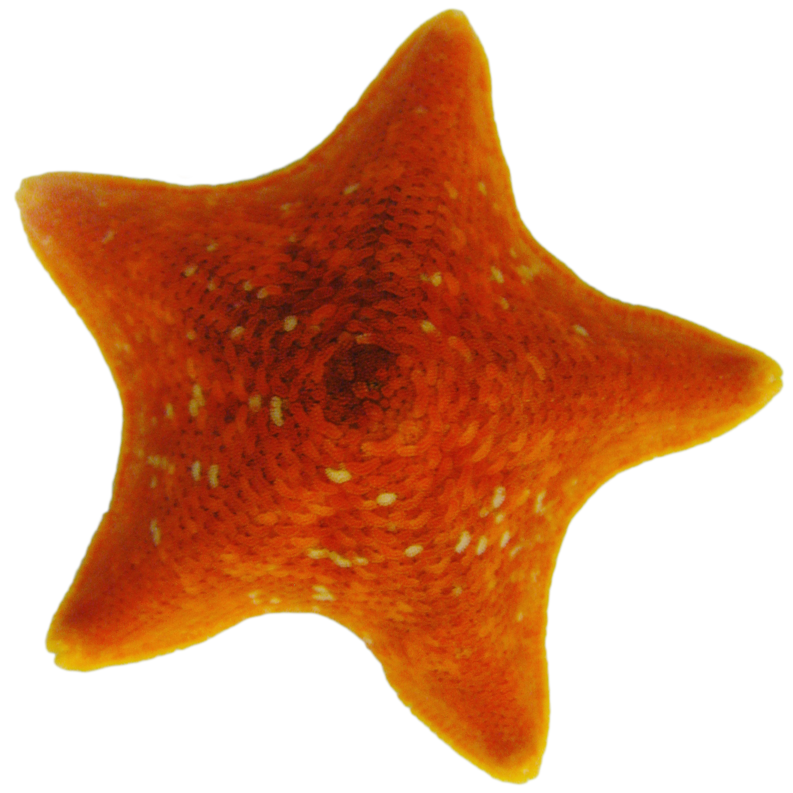
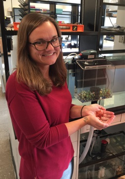

Large infectious disease outbreaks allow for relatively faster evolutionary changes in the host, pathogenic agent, and the community of microorganisms living within the host (the microbiome). While these interactions are poorly understood, they’re extremely important in predicting and controlling future outbreaks. The largest recorded marine epidemic is currently ongoing in intertidal ecosystems along the west coast of North America. Sea star wasting disease (SSWD) is effecting sea star populations from South Eastern Alaska to Baja California, Mexico and local extinctions are a serious concern. Large-scale epidemics such as these are expected to become more common as the global climate and species’ population distributions change due to human impacts. This current disease event provides a unique opportunity to better understand how hosts, the host's microbiome, and the disease causing pathogen change throughout an epidemic. The research proposed here will lead to a deeper understanding of these disease events from an evolutionary and ecological perspective by characterizing changes in host and virus due to natural selection following epidemics and comparing genotype and phenotype differences within the host, pathogen, and microbiome.This project aims to understand the impact of microbiomes and viromes on an individual and in an ecosystem, contributing to our understanding of an organism as a sum of its inhabitants. Traditionally, disease has been understood to be caused by the proliferation of one pathogenic agent within a host. It is becoming clear that a disease event is not just the proliferation of one disease-causing agent but the disruption in the balance within the organisms’ complex community of microorganisms. The evolution of disease is not the coevolution of two players (host and pathogen), but the coevolution of all members of the host’s community. The ongoing Sea Star Wasting Disease event provides a unique opportunity to investigate how this evolution plays out in a widespread epidemic caused by a highly virulent agent. Specifically, the proposed research aims to (1) identify genetic signals of natural selection in host and virus populations to identify genomic regions under selection and asses the current state of host disease resistance,and (2) investigate molecular mechanisms of the host, virus, and microbiome that underline resistance in hosts and virulence in virus in order to identify the tipping point between asymptomatic and symptomatic hosts.